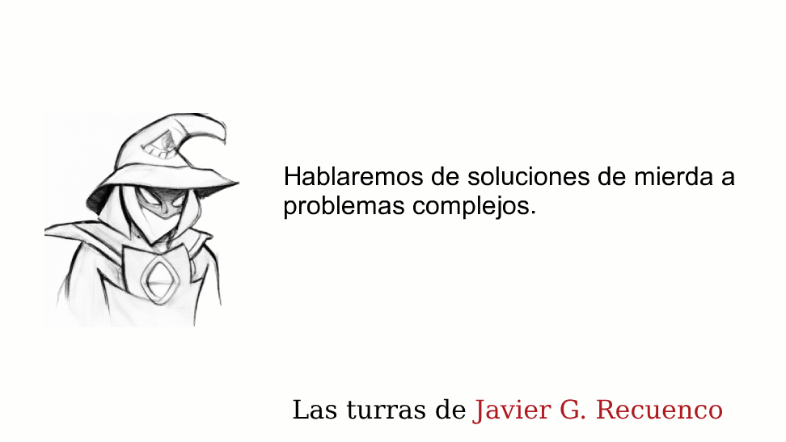
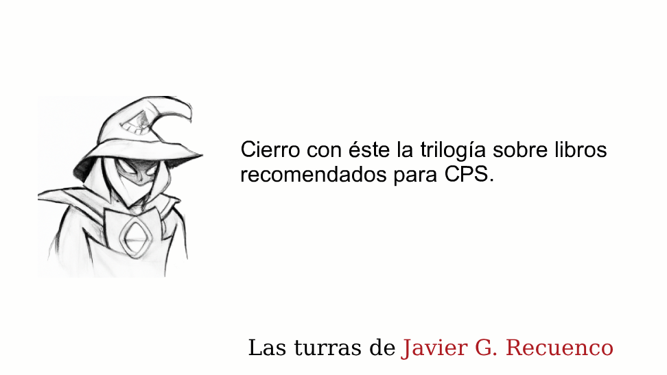

Módulo 02 / Apartado 5 de 5
Cuál uso y cuándo
La síntesis del módulo, una tabla que puedas usar, y el aviso de la contradicción que te espera en el módulo 5.
Las tres, en una frase cada una
Antes de la tabla, el resumen más corto posible de en qué se diferencian, que es en dónde ponen la atención.
- De Bono mira la cabeza
- El problema es que piensas por el surco de siempre. La intervención es sobre tu proceso mental y el de la sala.
- Nardone mira la conducta
- El problema es lo que haces cada día para resolverlo. La intervención es sobre el comportamiento, y empieza por bloquear.
- Rumelt mira el terreno
- El problema es que no has nombrado el obstáculo. La intervención es un diagnóstico y una renuncia.
La tabla de decisión
No es de Recuenco ni de ninguno de los tres. La he montado con lo que dice cada uno sobre su propio terreno, para que tengas algo que usar el lunes.
| Si lo que te pasa es… | Empieza por | Y ojo con |
|---|---|---|
| Llevamos meses dando vueltas a las mismas tres opciones | De Bono. Provocación, inversión, entrada al azar. Necesitas opciones nuevas, no evaluar mejor las que hay. | Que la sesión creativa se convierta en el entregable. Salir con cincuenta pósits no es salir con una solución. |
| Lo hemos intentado todo y cada intento lo empeora | Nardone. Lista de soluciones intentadas y bloqueo de la más repetida. Y la pregunta de cómo empeorarlo a propósito. | Que no puedas justificar la intervención ante un comité. Documenta con el método del módulo 5. |
| Tenemos un plan lleno de iniciativas y nadie sabe cuál es el problema | Rumelt. Diagnóstico primero. Nombra el obstáculo y aplica la prueba del competidor al documento. | Que el diagnóstico honesto señale a quien te contrató. Pasa más de lo que parece. |
| Hacemos lo mismo que antes y ahora no funciona | El metajuego. No ha cambiado tu jugada, ha cambiado el tablero. Mira qué está jugando el resto. | Confundir un cambio de metajuego con un problema de ejecución y apretar más al equipo. |
| Sabemos el problema, sabemos la solución y no se implanta | Ninguna de las tres. Eso es el módulo 6: comunicación, incentivos y equipos. | Repetir el análisis por tercera vez esperando que esta vez convenza. |
La contradicción que viene en el módulo 5
Conviene que la veas venir, porque cuando llegues allí va a chirriar.
El método estrella del módulo de metodologías es Kepner-Tregoe, y consiste en definir el problema como una desviación y localizar su causa por contraste, descartando candidatos hasta que solo queda uno. Es análisis causal en estado puro.
Nardone dice que no busques la causa.
Los dos están en el mismo temario oficial y no es un descuido. Son las dos mitades de un mismo campo:
- Kepner-Tregoe sirve cuando hay una desviación: algo funcionaba, dejó de funcionar, y existe un «antes» al que comparar.
- Nardone sirve cuando el sistema se sostiene a sí mismo: no hay un antes limpio, y la causa original puede que ya ni exista.
Saber en cuál de los dos casos estás es la competencia real, y no te la va a dar ninguno de los dos métodos, porque cada uno asume que estás en su caso.
Y una advertencia sobre las tres
Recuenco se coloca en el extremo de Rumelt, y su motivo no es que las otras dos no valgan. Es que la genialidad no se puede convocar cuando hace falta. Puedes montar un método profesional sobre el diagnóstico y la renuncia. No lo puedes montar sobre esperar a tener una idea feliz.
Con lo cual, si tienes que elegir una para empezar, empieza por el diagnóstico. Las otras dos entran cuando el diagnóstico te dice que hacen falta.
Fuentes de este apartado
Las turras de las que sale

Soluciones de mierda a problemas complejosTurra · 43 tweetsLa turra que ordena las tres escuelas en un eje y explica por qué él se coloca donde se coloca. También es donde está el palo al Design Thinking y el caso del programa de fidelización que nunca se implantó.

Cierra la trilogía sobre libros recomendados para CPSTurra · 42 tweetsEl marco de las cuatro macrodisciplinas, que es el criterio con el que coloca a cada autor. De aquí sale que Nardone quede en la periferia y que Munger use dos macrodisciplinas y media.